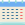

<p>
  <mat-toolbar color="primary">
    <span>
      <a class="logo" (click)="direct()">
        
        Mark.it
      </a>
    </span>
    <ng-container
      *ngIf="!((localStorage.get('token'))==null) && this.localStorage.decodePayloadJWT(this.localStorage.get('token')).cnpj == null">
      <span style="margin-left: 90%;">
        <mat-icon class="settings" routerLink="/user/config">settings</mat-icon>
      </span>
    </ng-container>
  </mat-toolbar>
</p>
